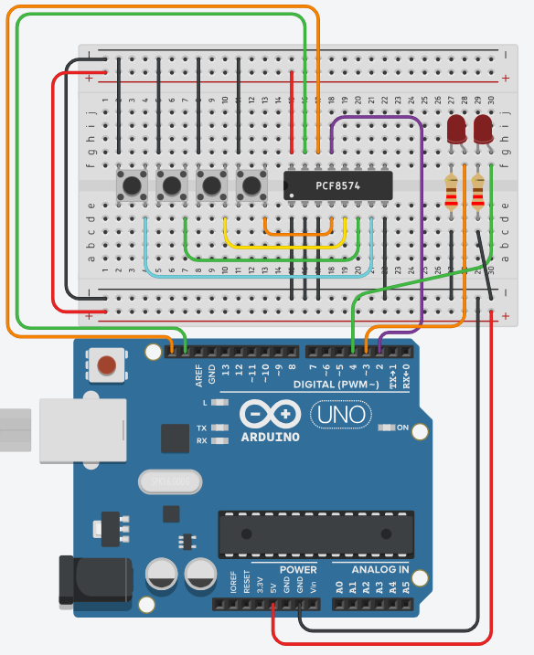

Je expander stuurt je één byte per keer, en daarin zit de stand van alle vier de knoppen. Nu ga je uitzoeken welk bit bij welke knop hoort.
Vertrek van je vorige oefening. De vier knoppen blijven waar ze zijn, je zet er een tweede led bij.

| Pin | Waarop |
|---|---|
| pin 2 | /INT van de expander, ongewijzigd |
| pin 3 | De linkse led, via een weerstand van 220 Ω |
| pin 4 | De rechtse led, via een weerstand van 220 Ω |
Pin 3 is de tweede interruptpin van je UNO, en hier gebruik je hem als doodgewone uitgang. Dat mag, want een pin is pas een interruptpin wanneer je er een attachInterrupt() op zet.
Hou het wel in je achterhoofd wanneer je zelf een schakeling ontwerpt. Je hebt er maar twee, en met deze verdeling is er nog één vrij.
Elke knop krijgt zijn eigen taak:
| Knop | Doet |
|---|---|
| P0 | Zet de linkse led aan |
| P1 | Zet de linkse led uit |
| P2 | Zet de rechtse led aan |
| P3 | Zet de rechtse led uit |
Het geraamte van je programma verandert niet: dezelfde ISR van één regel, dezelfde vlag, dezelfde volgorde in je setup(). Alleen wat je met die byte doet, is nieuw.
leesExpander() geeft je één byte terug, en daar zitten acht bits in. Elke knop is er één van:
| Knop | Masker | Ook te schrijven als |
|---|---|---|
| P0 | B00000001 |
1 of 0x01 |
| P1 | B00000010 |
2 of 0x02 |
| P2 | B00000100 |
4 of 0x04 |
| P3 | B00001000 |
8 of 0x08 |
Met & test je of een bepaald bit aanstaat. De binaire schrijfwijze is hier veruit de duidelijkste, want je ziet meteen weléérste bit je bedoelt. Zie Bits.
De valkuil uit de vorige oefening geldt hier nog steeds, want knoppen vertelt je welke knoppen op dit moment ingedrukt zijn, en /INT gaat ook af wanneer je loslaat. Bereken dus eerst netIngedrukt en test daarop.
Doe je het op knoppen, dan gebeurt er ook iets bij het loslaten, en op één of andere manier lijkt de helft van je knoppen dan niet te werken.
Sla je oefening op.
Overloop volgende checklist om je oefening zelf te evalueren:
Alles boven de loop() is identiek aan de vorige oefening. Vier losse if-testen volstaan; ze staan bewust niet in een else if-ketting, want er kunnen er in principe twee tegelijk waar zijn.
#include <Wire.h>
const int adresExpander = 0x38; // controleer met de I2C scanner
const int intPin = 2;
const int ledLinks = 3;
const int ledRechts = 4;
volatile bool expanderVeranderd = false;
byte vorigeKnoppen = 0xFF;
void expanderVeranderde()
{
expanderVeranderd = true;
}
void schrijfExpander(byte waarde)
{
Wire.beginTransmission(adresExpander);
Wire.write(waarde);
Wire.endTransmission();
}
byte leesExpander()
{
Wire.requestFrom(adresExpander, 1);
if (Wire.available())
{
return Wire.read();
}
return 0xFF;
}
void setup()
{
pinMode(ledLinks, OUTPUT);
pinMode(ledRechts, OUTPUT);
digitalWrite(ledLinks, LOW);
digitalWrite(ledRechts, LOW);
pinMode(intPin, INPUT_PULLUP);
Wire.begin();
schrijfExpander(0xFF);
vorigeKnoppen = leesExpander();
attachInterrupt(digitalPinToInterrupt(intPin), expanderVeranderde, FALLING);
}
void loop()
{
if (expanderVeranderd == false)
{
return;
}
expanderVeranderd = false;
byte knoppen = leesExpander();
byte netIngedrukt = ~knoppen & vorigeKnoppen & B00001111;
vorigeKnoppen = knoppen;
if (netIngedrukt & B00000001) // P0
{
digitalWrite(ledLinks, HIGH);
}
if (netIngedrukt & B00000010) // P1
{
digitalWrite(ledLinks, LOW);
}
if (netIngedrukt & B00000100) // P2
{
digitalWrite(ledRechts, HIGH);
}
if (netIngedrukt & B00001000) // P3
{
digitalWrite(ledRechts, LOW);
}
if (netIngedrukt != 0)
{
delay(20); // dendering laten uitsterven
expanderVeranderd = false;
vorigeKnoppen = leesExpander();
}
}& en == in deze testEr staat if (netIngedrukt & B00000001) en niet if (netIngedrukt == B00000001). Dat verschil is belangrijk.
Met & vraag je: staat dit ene bit aan? De rest van de byte laat je met rust. Met == zou je vragen of de hele byte precies gelijk is aan 1, en dat is alleen zo als er verder geen enkele andere knop tegelijk ingedrukt werd.
Raak je twee knoppen tegelijk aan, dan werkt de test met == dus niet meer.